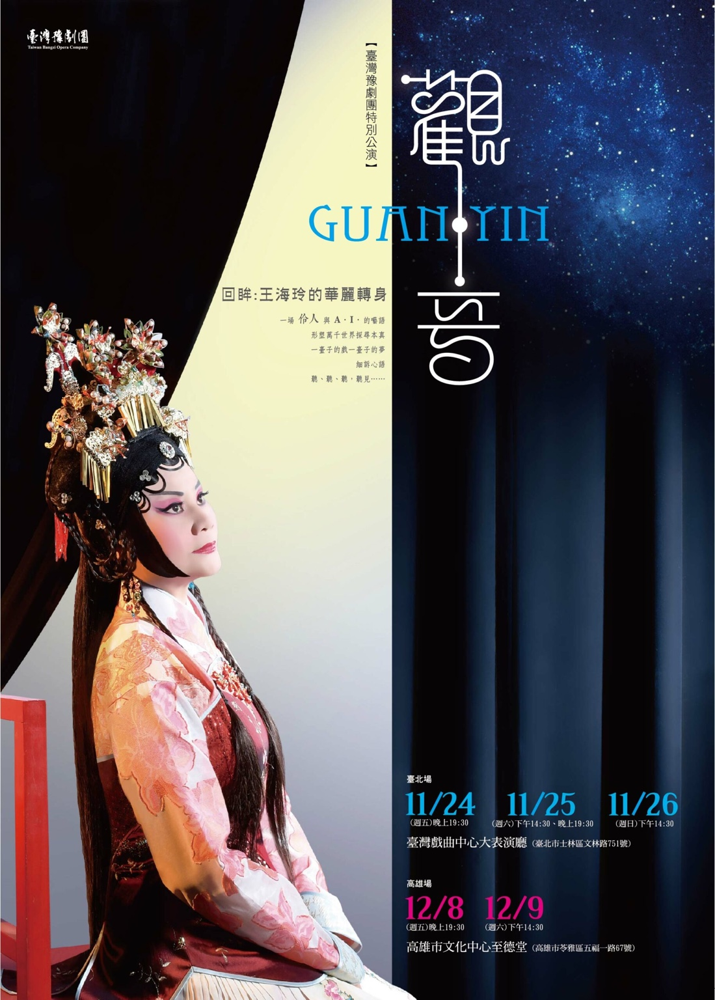
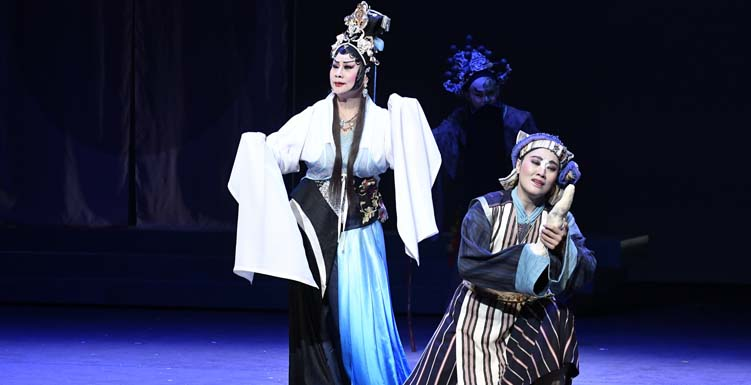

WORK · 2017
《觀・音》
編劇

一場伶人與 A.I. 的囈語：從角色回望「我是誰？」
為王海玲公職屆齡退休所創作的特別公演。作品不是宗教劇，而是把「觀・音」設計成一個類似智慧型助理的 App：主角下載 App 後掉入異時空，過往演過的角色、舞臺記憶與真實人生逐一浮現。
數位網絡、多維空間、虛擬實境與傳統宗教思維交錯，讓一位演員的舞臺生命成為作品本身。
SYNOPSIS
掉進自己演過的角色裡
她下載了一個奇妙的 App，無意間掉進目眩神迷的異時空。自幼登臺後演過的男女老少、生旦淨丑，像星群般重新出現在眼前；角色彼此串連，逐漸形成一齣「似曾相識卻從沒演過的戲」。
真實的演員與舞臺上的角色互相凝視：華美光影更迭之後，哪一個才是「我」？作品將「觀」與「被觀」、記憶與幻想、扮演與本真疊合，讓回顧演藝生涯成為一次自我探尋。
STAGE IMAGE
演出劇照

CREATION
回眸不是告別
編劇以王海玲曾塑造的經典角色為素材，將人物、人生與舞臺史互相穿插。科技媒材不是裝飾，而是用來把「記憶」「分身」「虛擬角色」具體化，重新探索「觀音」作為觀看、聆聽與自我理解的多重意涵。
CRITICAL RESPONSE
評論節錄
《觀．音》十足展現編劇對六齣新舊不一、題材不同、行當相異作品的掌握，不流於六戲的串演，在能夠盡情揮灑原劇替人物所塑造的形象、以及表演技藝的前提下，不留痕跡的銜接並形成全新的獨立故事。……《觀．音》能夠視為台灣豫劇團的經典之作，並且可在台灣豫劇的發展史上有所定位，不只在於編劇的大膽巧思、跨世代演員的精彩演繹，以及導演戴君芳如何將如此複雜的結構用一種華麗卻又乾淨、簡單的畫面呈現，達到編、導、演三個環節的平衡與互惠；更在於其能在雜亂的豫劇創作脈絡裡理出一條清晰的故事線，以戲說戲、以戲說人、以戲說史的同時，也明確發揮了屬於台灣豫劇的氣質與特色。因此，《觀．音》便能真正專屬台灣豫劇團，並非其他劇團能夠輕易複製、模仿。
演員與皇后《觀．音》｜吳岳霖（表演藝術評論台專案評論人）在劉建幗的安排下人物們接連出場，並從原角色劇中摘選出部分片段，表現其人物特質及表演特色，猶如展開王海玲演藝生涯的一紙畫軸，帶領觀眾進入時光隧道。此外，老、中、青三代演員的分飾亦可見劉建幗試圖在此部作品中，展現臺灣豫劇團在王海玲等資深演員帶領下的成長，以及青年演員已能獨當一面的企圖。
華麗、璀璨的轉身回眸《觀．音》｜林立雄（表演藝術評論台專案評論人）